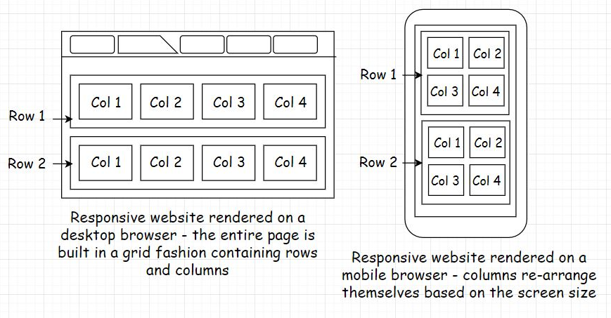
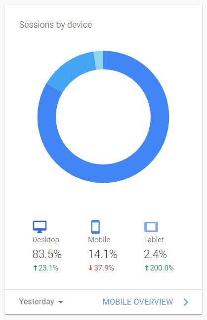
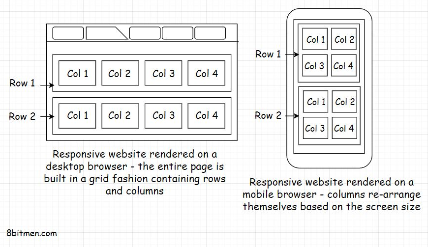
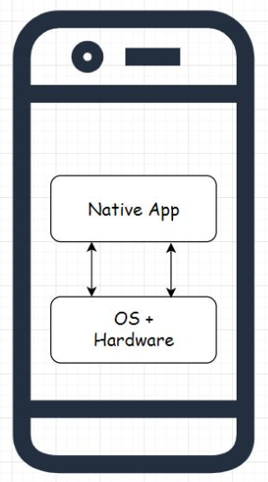
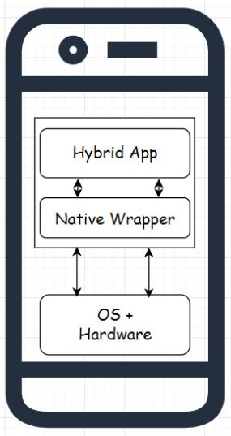
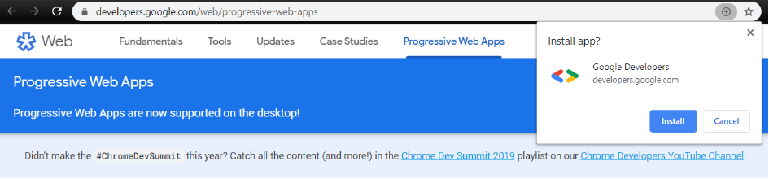
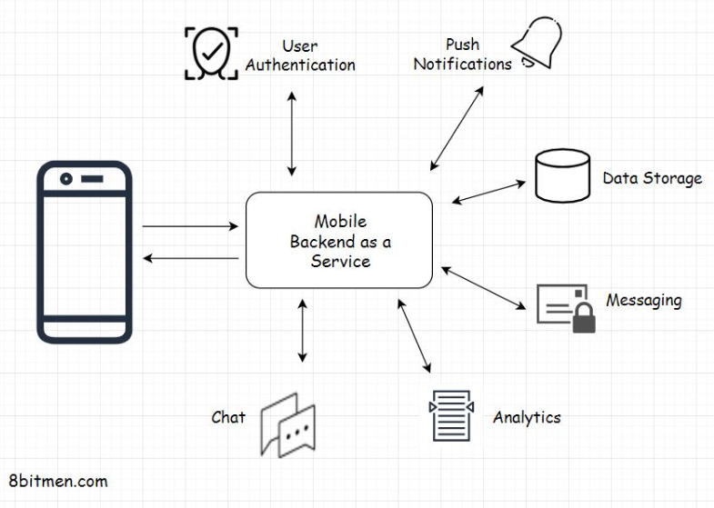
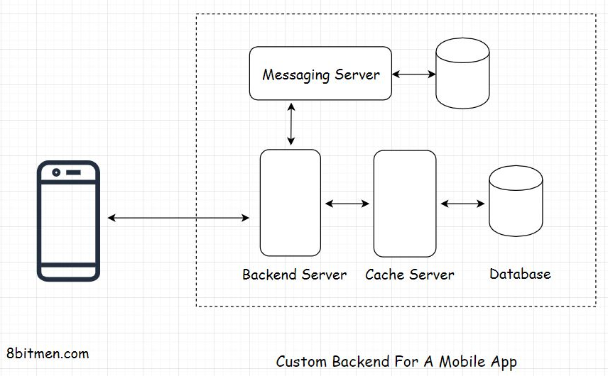
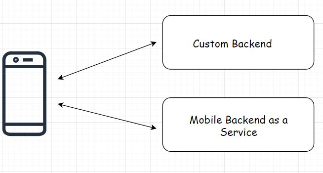
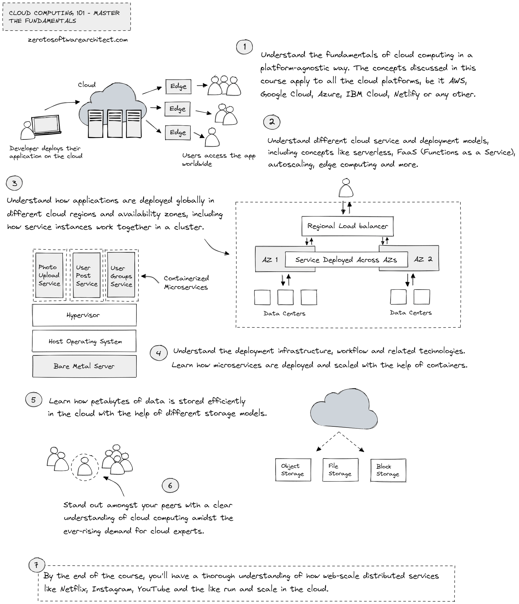

1. The arrival of handheld devices• If I told you that mobile devices today have the maximum market penetration globally as opposed to other devices like laptops, tablets, etc., you wouldn’t be surprised at all. Approximately 60 to 70% of the users in this day and age are accessing online services through their mobile devices as opposed to any other devices.• • This technology shift is for a few reasons: accessibility and the ease of use of mobile devices. We can carry our mobile phones with us everywhere, whether when hanging out with our friends or when at our office cubicles. Also, we don’t have to be tech-savvy to operate a handheld device. My grandmother, who has never operated a computer, runs Google searches through voice commands on her Android device without any sort of assistance. This is how simple and intuitive the user interfaces of handheld devices are.• • Engineers have done an impeccable job making the user interfaces as intuitive as possible, making the onboarding of the new users smooth. The mass adoption of handheld devices has completely changed the technology landscape. It has provided a way for non-tech-savvy users to enter into the online universe. It’s a totally different ball game. Businesses are going from web-first to mobile-first. There was a time when just nerds used to play computer games, but today everyone is playing Candy Crush, PubG, Fortnite, Freefire, Angry birds and so on their mobile devices.• 1.1. The transition from desktop to mobile• I’ve always been an avid gamer. I love to play games on all the platforms, be it on the web, a console, or a desktop. Back in the day, around 2010, I got introduced to casual gaming via Facebook social games like Farmville and many more. These games have a freemium business model. These are free to play with in-game purchases and were popularized by companies like Zynga in conjunction with social networks like Facebook. Farmville is one popular product of Zynga that had a significant contribution in putting the company on NASDAQ.• • I got pretty hooked. These casual games became my thing. I often switched between my work tabs and the game tab throughout the day on my browser; this kind of kept me going for a longer period of time without getting bored or burnt out.• • Online multiplayer social gaming was a new thing then, and it became a major source of earning for Facebook. Every now and then, there was a new exciting game on the Facebook app store. Just Zynga alone contributed 15 to 20% of Facebook’s total earnings.• • Gradually, smartphones started becoming popular. They significantly improved in hardware in a short period. They were loaded with more features, cool cameras, better memory, and whatnot. As smartphones’ popularity rose and they became a household thing, this changed the whole online gaming landscape. Almost all of the games transitioned to mobile devices, as the gaming companies observed better user retention and engagement rates via the mobile versions of their games. After the gaming studios introduced mobile clients for their games, they witnessed more Monthly Active Users (MAU) and Daily Active Users (DAU).• • As mobile engagement increased, the web was decreasing. Many businesses decided to focus just on mobile. Clash of Clans is a good example of this.• • Today, we can hardly find any games on Facebook besides the instant messenger games. Several have gone mobile-only. The Facebook game store feels like a deserted place, and the social network is focusing more on ads, business pages, and Facebook groups to make profits. This technology shift is not just for the gaming segment. This is happening for arguably every business niche.• • Mobile devices today bring in the majority of the traffic for businesses. There are mobile-only businesses with billions of users like Instagram, TikTok, Pokemon Go, etc. Google Play Store has over 2 billion monthly active users and has over 3.5 million apps, 82 billion app downloads as of today.• • In case you are wondering what do terms like mobile-only, mobile-first, mobile-friendly mean? What significance do they have in the application development domain? We’ll find out in the next lesson.2. Before You Design Your Mobile App• If you are in the initial planning and design phase of your service or already have a web-based service up and running and are wondering whether you should have a mobile app for your service, it’s always a good idea to do thorough market research in your niche before you get down to writing a mobile app for your service.• I know I just said that mobile devices have the market penetration and are bringing in the majority of the traffic, but there is no one size fits all strategy for approaching the market for businesses. I want to give you a quick example here. I own a technology website, and almost 80% of my visitors are from the desktop. My business does not have a mobile app, and it’s doing just fine.• • So, there are several things to consider before you decide whether you really need an app for your business. Yeah!! It may be a good thing to have, but is it a necessity? Writing a mobile app has significant costs associated with it to the point you may have to set up a dedicated mobile dev team for your business.• • If you are feeling courageous and thinking of writing a mobile app all by yourself, let me tell you this: it has a steep learning curve. Speaking from experience, you will begin thinking, “Well, I know the backend development. How tricky can writing a mobile app be?” And, along the way, you would be like, “Oh man!! I never thought getting my business on mobile would involve so much work. Will this ever end?”• • Hand-held devices are battery-powered, and the resources (CPU, Storage, RAM, Data) and user’s patience are limited. It requires an entirely different mindset when writing mobile apps as opposed to when writing web applications that would run on the cloud. Big players like Facebook, Instagram, and others do a lot of research and strategizing when developing their apps.• • We’ll talk all about that, but before let’s be clear on terms like mobile-only, mobile-first, mobile-friendly. So, what do these terms really mean?• 2.1. Mobile only• Mobile-only means that the business operates just via mobile. It may have a mobile website or an app on the play store or both. Generally, it’s the apps that the businesses move forward with when going mobile-only which drive most of the traffic.• • Mobile websites run on mobile browsers and are primarily built for engaging traffic coming in from the Google search. From there, the users are routed to their respective apps. TikTok, Pokémon Go are examples of mobile-only businesses.• 2.2. Mobile first• Mobile-first means the service’s user interface is designed with the idea that most of the business’s users will use its services via its mobile client. The desktop-based website interface is secondary. The mobile interface is the interface that a business would want to show to its customers first as opposed to its desktop interface.• • A mobile-first website will contain all the features that a user would need to fully experience a service. In a mobile-first approach, it’s possible for the desktop interface to contain fewer features.• • When the designers start to design the interface, they first design the mobile interface. Then based on that, they build the interfaces for other platforms like desktop, tablet, etc. In a mobile-first approach, a business typically goes to the market with an app or a browser-based mobile website.• • Myntra.com, India’s leading online fashion retail business, is a good example of this. It started with both a desktop website and a mobile app. The majority of the revenue was generated from the mobile app over 70% with over 90% traffic. So, they started focusing more on the mobile app and eventually killed their desktop website.• • But over time, because of customer demand for the business to be on both platforms, Myntra re-opened its desktop website but is still a mobile-first business.• 2.3. Mobile friendly – Responsive• Mobile-friendly as the name implies, are websites that are friendly for mobile but are originally built to render on desktop browsers. They are popularly known as responsive websites. They have a grid-based design and adapt themselves based on the screen size of the device. We can also call these websites web-first or desktop-first.• • Generally, a responsive web page is divided into rows and columns containing grids. As the screen size gets smaller, those grids rearrange themselves based on the screen size.

• So, with this approach, we don’t have to do anything additional for mobile. Just develop a desktop-based responsive website and it will automatically render for all screen sizes.• This may sound convenient, but there is a slight hitch. We may not have 100% control over how the responsive website renders on different devices. Some elements of the page may get hidden or may not render in a way that we would like. To tackle this, we can write CSS-media queries, but still, it won’t be as good as a mobile-first built website. This is why businesses prefer to go ahead with the mobile-first strategy if most of the traffic comes in from the mobile.• 2.4. What approach should you choose for your business?• When picking the right strategy to approach the market, we need to be informed on things like:• • How are the users of the existing businesses in the same niche, if there are any, accessing their websites?• Do these businesses have an app on the popular app stores or are they operating just via their websites? If they have an app, how many downloads do they have? What are their primary traffic and social discovery (how users find the service) sources?• What is the revenue generation platform-wise? Sometimes it’s hard to get that kind of info if the business doesn’t declare it publicly. However, we can look into the traffic on their app and the website and assume (though it’s not always true) that the platform getting the maximum traffic will generate most of the revenue. For all this business analytics information, there are a plethora of freemium tools with browser extensions and services available online—just Google.• Besides these key points, the type of service offered to the users plays a decisive role in creating a strategy for approaching the market. It makes it easy to figure out if we need to move ahead with or without a mobile app.• • For instance, say, we intend to bootstrap a service in the health niche that would enable the users to track their eating habits and suggest healthy alternatives. The service would also have some social features for user engagement and retention.• • What do you think would be the best strategy to approach the market in this use case? Do we need a mobile app? Or will a web-based website suffice?• • To track meals throughout the day, it would be inconvenient for the user to open their laptop or rush to their desktop every time they want to input or check the calories of the meal they just ate. On the other hand, if we offer the end user all the services via an app that they could install on their mobile, they can easily track all their meals throughout the day anywhere they want, be it at home, the office cafeteria, or when stuck in traffic. It’s an obvious fact that a mobile-first approach will work best for our use case.• • We can also have a web-based interface. This is a good to have but not a necessity, atleast in the initial stages of starting up. From a technical standpoint, there are technology offerings like Firebase that enable us to write an app without investing too much time in setting up the backend infrastructure. There will be more on that in the upcoming lessons.• 2.5. Real-world examples• Myntra.com was making 30% of the revenue from its desktop site, but they took the decision to ditch the web version of the business for the mobile version. This is because dedicated platform teams have costs. Focusing on a single platform is both peaceful and economical at the same time.• • Speaking of my technology website, the majority of visitors, almost 80%, are from the desktop. Here is the Google analytics image for the traffic on my website.

• So, naturally, a mobile-first approach isn’t for me. A mobile-friendly approach is ideal for my use case. Therefore, my website has a responsive user interface. However, say I was selling something on my website, and most of the sales would be happening via the mobile client regardless of the fact that the maximum traffic was coming in from the desktop. I may have to think about writing a mobile app for my business for one simple reason: money. It would then make perfect sense for me to have a strong presence on both platforms.• Here is one more example with regards to this. Pixel Federation, a browser and app-based gaming company based out of Slovakia, launched a game called Seaport in 2015. The team started with the desktop browser version of the game integrated with Facebook. This is how I discovered the game. In 2017, they launched an app that got over 8.1 Million downloads.• • The app launch helped the game earn over 7.6 Million €. The game has approximately 305K Daily active users, and out of them, only 50K are desktop users. However, those 50K users bring in almost one-third of the game revenue.• • So, I believe you got the point. Researching in your niche is essential before you start writing code.• • In the next lesson, let’s talk about the responsive user interface.3. Responsive Interfaces• In the previous lesson, I discussed mobile-friendly responsive websites. These websites run in the mobile browser and is one way of having a mobile client for our service. In this lesson, we will have a quick insight into developing responsive websites for our service.• There are two approaches to designing responsive websites: mobile-first and web-first. We already know what these terms mean. In the mobile-first approach, we design the website for the small screen and then let it adapt to the bigger desktop screen.• • In the second approach, we do the opposite. We design the website for the bigger screen and then let it adapt to the smaller screens.• • In this day and age, when most of the world is online, there are a plethora of smart devices available in the market with different and unique screen sizes, including smart TVs, smartwatches, Kindle, Android-powered devices, IoT devices, Blackberry, Windows handheld phones, Apple products like iPhone, iPad and the list doesn’t end here.• • We can now even check our Facebook notifications and emails on our super tiny smartwatch screens. Well, if you ask me, I will always prefer to check my messages on my phone, unless I am James Bond.• • Anyway, it’s not possible for developers to create and maintain dedicated user interfaces for every screen size. This makes writing a responsive user interface an obvious go-forward approach for us.• • A popular saying with responsive web design is that the content should be like water. It should take the shape of the vessel it is poured into.• • Okay!! Now, let’s talk about the popular technologies used by the developers for writing responsive user interfaces.• 3.1. Designing responsive websites• I am not a designer, how do I develop a responsive website?• • If you are not a designer, you are more of a backend developer and even cannot hire a designer and want to design a professional-looking responsive website all by yourself. Pick BootstrapJS. Period.• • BootstrapJS is a production-grade open-source CSS framework for designing responsive user interfaces. It contains CSS, standard JavaScript features, animations, typography, form elements, buttons, and many more commonly used website elements. Everything is pre-loaded, so we don’t have to write anything from the ground up. Create a grid, plug the elements together and build your website.• • Also, since the framework is open source, there are a lot of ready-made templates and plugins, both free and premium, if you need much more than what the core framework offers. Still, if you cannot find the additional features online, you can always write it for yourself as the code is open to all.• • I have personally used the Bootstrap framework for most of my websites. It has never let me down. I am not a designer. I am more of a full-stack developer. The learning curve is not that steep. If you have some idea of frontend development, it should hardly take less than a week to get the hang of the framework. It’s intuitive and easy to understand. Just wisely use the grid-based approach using rows and columns to build the web page.

• The framework was originally written at Twitter to have consistency across all the user interfaces of the internal tools. Before Bootstrap, the Twitter frontend developers struggled with the maintenance and consistency across multiple user interfaces. At a later point, Twitter released the project as open source. You can check out some of the projects built using the Bootstrap framework here.• Another popular framework for writing responsive websites was jQuery Mobile. The project is developed and maintained by the jQuery project team. Though, JQuery is taking a nose-dive in popularity since most of its features are now offered by modern browsers with vanilla JavaScript without the need to write much code.• • Also, I am biased towards using Bootstrap because I really like the default CSS provided by the framework.• • Besides these two popular frameworks, if you wish to browse through some other solutions for designing responsive websites, many include Skeleton, HTML5 Boilerplate, Less Framework, etc.• • So, Folks! That’s about it regarding designing responsive websites. In the next lesson, let’s talk about the types of mobile apps.4. Types of Mobile Apps• For the record, when I say mobile apps, I specifically mean the apps that we download from the app stores like the Google Play Store and install on our mobile.• There are two types of mobile apps: native and hybrid. In this lesson, we’ll find out what they are and what technologies are required to build these apps. In the subsequent lessons, we’ll also discuss things like:– Why is it so important for developers to pick the right type of app, native or hybrid, to implement their use case?– Why do we need different types of mobile apps? What are the pain points these app types are trying to solve?– Which app type, hybrid or native, will suit best for my use case?– • So, without further ado. Let’s get on with it.4.1. Native app• Native apps are apps that are built exclusively for a certain operating system; it can be Android, iOS or Windows-based handheld device OS.• • These apps function only on the OS they are built for. For instance, an app built for Android OS will not work on Apple OS.• • Native apps interact directly with the operating system and the device hardware as opposed to communicating with it via a wrapper, an adapter or a middle layer. Therefore, they have full access to the device hardware like camera, sensors, and so on.• • These apps provide high performance, have a consistent user interface, providing the look and feel of the native OS.

• Native apps don’t face any lag issues when rendering UI animations like the slider movement, hiding and displaying UI elements, etc. With these apps, the UI is pretty responsive. This means that when the user clicks on the UI, they can immediately see the change as opposed to seeing it after a bit of a lag.• Native apps are developed using the APIs and the SDKs provided by the native OS. Some examples of native apps are the Android apps of LinkedIn, Tinder, and Hike.• 4.2. Technologies for writing Native Apps• Every mobile OS supports a certain set of technologies for writing an app that would run on that particular OS. For instance, if you want to build an app that would run on Android OS, you can use Java, Kotlin or C++.• • Likewise, for writing native apps for iOS, you can use Swift and Objective C along with the Cocoa Touch framework.• • Similarly, every respective mobile OS supports a distinct set of technologies to enable developers to build apps for its platform.• 4.3. Hybrid app• As the name implies, hybrid apps are a hybrid between the native and the web-based technologies. Like native apps, they can be installed from the app stores on the mobile, can access the hardware of the device, and can also communicate with the device’s OS.• • Hybrid apps are primarily built using open web-based technologies such as Html5, CSS, and JavaScript. They run in a native container and communicate with the native OS via a wrapper or a middle layer. This middle layer enables open web technologies to talk to the native OS.• • Now, because of this additional middle layer, which native apps don’t have, hybrid apps are a bit slower than native apps in performance and rendering the UI.

• There are several popular frameworks available to write hybrid apps such as React-Native, Ionic, Cordova, etc.4.4. Technologies for writing hybrid apps• Below are a few popular technologies for developing hybrid mobile apps.• 4.4.1. React Native• React Native is an open-source mobile application development framework, written in JavaScript, developed by Facebook. Leveraging it, we can develop applications for multiple platforms like Android, iOS, Windows, etc.• • Before releasing the framework, Facebook was already using it for its ad manager, analytics, and group app. React Native is a pretty popular framework for writing hybrid apps. In 2018, it had the highest number of contributors for any repository on GitHub.• • Some of the companies using React-Native for their mobile apps are Bloomberg, Walmart, Uber Eats, and Discord.• 4.4.2. Apache Cordova• Apache Cordova is an open-source hybrid mobile application development framework released by Adobe. The framework enables the developers to build mobile apps for Android, Windows, and iOS, using Html, JavaScript, and CSS.• • Several ecosystems and frameworks are built on Cordova, like Ionic Framework, PhoneGap, etc.• 4.4.3. Ionic framework• Ionic is an open-source SDK for writing hybrid mobile apps built on Apache Cordova and AngularJS. This framework is leveraged by big guns in the industry like EA, GE, Amtrack, etc., to develop their mobile apps.• 4.4.4. Flutter• Flutter is an open-source hybrid mobile application SDK by Google. It can be leveraged to develop applications for platforms like Android, iOS, Windows, Mac, Linux, Google Fuchsia & the web.• • This is a good Wikipedia resource that lists out various mobile app development tools, SDKs, and platforms for developing mobile apps.• • So, these are some of the popular technologies used by the industry to write hybrid apps. We will continue discussing hybrid and native apps in the next lesson.4.5. Cross-platform app development pain points - The need for hybrid apps• Up to this point, we have learned about the two different types of mobile apps and the popular technologies that are leveraged to build them. When we talk about hybrid apps, the first question that pops up in our mind is: Why do we need this type of app when we already have native apps? They are performant and have a consistent UI, so why would any business want to compromise on the user experience by offering its service via a hybrid app?• Well, there are a few pain points that come along with the native app development, and businesses have to turn towards hybrid apps to overcome those pain points. Let’s find out what they are.• Earlier I discussed that when writing native apps, we have to develop dedicated apps for every platform: Android, iOS, Windows, Blackberry, or any other OS. Developing and maintaining a dedicated mobile app for every OS is the biggest pain point of cross-platform app development.• Every OS supports a specific set of technologies to build apps for them. There is no common ground and no standard technology that is supported by all the platforms. Due to the need to have a presence on multiple platforms, developers have to first educate themselves on various technologies before they get down to the implementation of any sort.• • Businesses have to set up dedicated teams for every platform. A team building an Android app has to be proficient in Java, Kotlin or C++, and a team building an app for iOS has to be proficient in Swift.• • Even if the reluctant developers go through the steep learning curve and build and launch their apps on these platforms. What’s the guarantee that, in the future, a different OS won’t pop up that would support a different set of technologies to build apps for its platform?• • Naturally, when starting up, we do not have enough resources (developers + money) to set up dedicated teams and codebases for every platform. We need a common codebase, something portable, something we could build once and run everywhere.• • This pain point led to the emergence of hybrid apps. Since these apps are developed using open web-based technologies like HTML5 and JavaScript. Developers working in the modern web development space already have this skill set, and they do not have to go through a steep learning curve to build these apps.• • Any developer with the modern web development skillset can start writing code without going through a daunting learning process. With hybrid apps, businesses do not need dedicated teams for different platforms. The same codebase can be deployed on multiple platforms with minor modifications. These apps are easy to build due to the familiarity with the tech, saving time and money.• • So, building hybrid apps is the way to go, right? I am just starting up, my team is small, and I have limited resources. Why would I want to write a dedicated app for every platform? I should pick the hybrid app approach, isn’t it?• • Well, I wish the answer was that straightforward, and I could say yes! As I’ve said throughout the course, there is no silver bullet. No one size fits all. Every tech has a use case, and it comes along with its pros and cons. Hybrid apps are no different.4.6. Issues with Hybrid apps• Hybrid apps are not as performant and smooth as native apps as they run inside a native container and talk to the underlying OS via a middle layer. This slows down their performance a bit and introduces lag.• • Although a few frameworks and ecosystems claim to be as performant as native apps, sometimes even better, marketing is one thing and running an app in production achieving the same performance as native apps is another.• • In the past, a few of the businesses have tried to adopt the hybrid app single codebase strategy to deploy their apps across platforms but have eventually reverted to the native app approach to achieve the desired user experience.• • Here are a few examples:• 4.7. Real-life examples4.7.1. Airbnb ditched react-native for native tech• In a series of blog posts, Airbnb engineering shared their experience of developing their mobile app with React-Native. They built their desktop website using React. Hence, they considered React-Native an opportunity to speed up the app development process by having a single codebase as opposed to having multiple codebases for different platforms.• • They spent a couple of years working on it and eventually abandoned React-Native for the native technology. They faced performance issues specifically during the app initialization, initial render time, app launch screen, navigating between different screens, and so on. They also experienced dropped frames.• • They had to write several patches for React-Native to get the desired native functionality. They found some of the trivial stuff that could be easily done with the native tech quite challenging to pull off with React-Native.• • The lack of type safety in JavaScript made it difficult to scale. The development process turned out to be difficult for engineers who were used to writing code in languages with default type-safety checks. The lack of type safety made code refactoring extremely difficult.• • For a full account of their experience, read React Native at Airbnb.• 4.7.2. Udacity abandoned React Native• Here is another instance where the Udacity mobile engineering team abandoned React-Native due to the increased number of Android-specific features requested by their users. Their Android team was reluctant to go ahead with the hybrid app approach, and the long-term maintenance costs of the React-Native codebase were high. They also faced UX consistency issues across the platforms. For a full account of their experience, here you go.• 4.7.3. Facebook admitted counting big on HTML5 for their mobile app was a mistake• This is back in 2012. I know it’s been a while, and technologies have matured a lot. Still, I felt I should add this instance.• • Facebook admitted that they made a big mistake investing too much time and resources writing their mobile app with HTML5 instead of native tech. Their mobile strategy relied too much on open web technologies. Here is a full account on VentureBeat.• • With this, we have reached the end of the lesson. In the next lesson, I’ll talk about how to choose the right mobile app type for our use case.5. Choosing Between a Native and a Hybrid App5.1. When should we pick a native app for our use case?• Here are the scenarios listed below when we should go ahead with a native app. Pick a native app when:– You have heavy graphic and hardware requirements, like when developing a mobile game, a video editor or a game streaming app. In this scenario, even a tad bit of lag is unacceptable. We cannot compromise on performance.– Say you intend to write an app with heavy UI animations, like, a fancy social app having a lot of animations, a finance app containing a lot of real-time charts and graphs and so on. In this scenario, again, it’s unacceptable to have any sort of lag in the application. The application needs to be as responsive and reliable as possible.– The app is pretty complex and relies on hardware access, like camera, sensors, GPS, etc., to function. In this scenario, we typically have to write a lot of platform-specific code. A GPS, sensor-based health and a step-tracking app is good example of this.– The look and feel of the app and the user experience are expected to be just like the native OS and when the UI needs to be, not just functional but flawless.– You have other businesses in the same niche competing with you with native apps. It would be a blunder to offer our service via a hybrid app. Users today aren’t installing as many apps as they used to. Don’t expect them to show mercy on you when you don’t have a better product than your competition.– The app needs to support new mobile OS features as soon as they are released.– You are a business that can afford dedicated teams for Android and iOS. You should go ahead with native apps. Don’t even think about the hybrid app approach.• 5.2. When should we pick a hybrid app for our use case?• Pick a hybrid app when:– The app requirements are simple. You have no plans of adding any new complex features in the near future. A news app is a good example of this. Developing a news app as a hybrid app will provide the same look and feel across all the platforms.– You cannot afford dedicated codebases for different platforms but still have to hit the market. There are two approaches to this: either launch with a native app on one platform or write a hybrid app. It entirely depends on how you want to go ahead.– There are instances where you don’t need dedicated apps and a hybrid app is good enough to serve your requirements well. Yes, the native apps provide top-notch performance, but you cannot entirely discard hybrid tech on the grounds of performance and the availability of other native features. It all depends on your requirements.– You just need to test the waters with a pre-alpha release or an MVP (Minimum viable product). In this scenario, it doesn’t make sense to learn the native tech to write the app. You can quickly launch the MVP via a hybrid app and have separate codebases later.– You have a team that is not fluent with the native technologies, and it would take a lot of time to learn a particular native tech. This scenario is a trade-off between costs and performance. Also, developer sentiment is another aspect to this.– • So, these are some of the general rules that you can follow when deciding on the two types of apps. Another good approach is to look for businesses in the same niche. Research what technologies they have used to build their apps. See if it is viable for you to do the same.• • With this being said, let’s move on to the next lesson, where I discuss progressive web apps.6. Progressive Web Apps• Progressive web apps or PWAs are apps having the look and feel of native apps that can run in both mobile and desktop browsers. They can be installed on the user’s device right from the browser as opposed to the app stores. When installed on the device, progressive web apps run in their own window without an address bar or a browser tab, just like native apps. When we open a PWA in the browser tab, we see the install option with a plus sign in the address bar. Clicking on it will install the app on our device with a shortcut on the home screen.

• But don’t we already have responsive mobile websites for the browsers? Why do we need progressive web apps? What good is that?6.1. The need for PWAs• Today, businesses are more inclined towards writing progressive web apps than responsive websites as they have the same look and feel as native apps. The general flow is that the businesses entertain the search engine traffic via their responsive mobile websites and then try to re-direct that traffic to their native mobile apps. I’ve talked about this before.• • Now, instead of directing the users to their native apps, businesses can offer the same native app experience to the users directly in their browsers. Also, if the user wishes, they can install the app from the browser on their device. Progressive web apps function just like the native apps with having access to the underlying OS and the device hardware.• • Also, since progressive web apps are developed using open web technologies like HTML, CSS, and JavaScript, also with the help of frameworks like Angular, React, Ionic, and Google Polymer, there is no native tech learning curve. Just write the code once, and run it everywhere.• • PWAs run in both mobile and desktop browsers and can even be installed on desktops. These apps can work offline and have push notifications just like native apps. Search engines can index them and users can share the links of the apps with their friends. We don’t need to update them every now and then as we generally do with native apps.• • So, every time we open an installed PWA on our device, we will see the latest version of it, just like the regular websites on the web.• • So, that means there is a possibility of native apps going obsolete. Right?• 6.2. Will PWAs replace native apps?• No!! PWAs are not a replacement for native apps. Native apps still hold good for the use cases I discussed in the previous lesson. We definitely don’t want to write an online mobile game that is CPU intensive with a PWA. A Native app will easily beat a PWA in terms of performance and user experience.• • PWAs are more in competition with responsive mobile websites. I mean, why write a responsive website when you can develop something that provides an app-like experience? Imagine browsing an e-commerce website via a responsive mobile site and then with a progressive web app. One would always prefer an app-like experience.• • Now, let’s have a look at some of the examples of progressive web apps.• 6.3. Examples of progressive web apps6.3.1. BookMyShow PWA• Bookmyshow.com is India’s leading event and movie online ticket-booking platform with over 75 million monthly visitors. They experienced a high bounce rate on their mobile website and to bring it down they replaced it with a progressive web app.• • After the launch of their PWA, they observed an exponential increase, upto 80% on the conversion rates. In terms of the app size, their PWA is 54 times lighter than their Android app and 180 times than their iOS app.• 6.3.2. Flipkart PWA• Flipkart.com. India’s leading retail e-commerce website, shut down its mobile website and moved forward with the app-only strategy. It was hard for the development team to provide an app-like immersive experience on their responsive mobile website.• • With the launch of their progressive web app, the engagement rate increased three times, the conversion rate went up by 70%, and there was a reduction in the data usage by three times. For a full account, here you go.• 6.3.3. Twitter PWA• Twitter gets approx. 7 billion monthly visits. It launched its progressive web app in 2017 and made it the default mobile web experience for users. This increased their pages per session by 65%, decreased the bounce rate by 20%, and increased the tweets sent by 75%.• • In the next lesson, let’s understand mobile backend as a service.7. Mobile Backend as a Service• Mobile Backend as a Service or MBaaS is a cloud-based service model that takes care of the backend infrastructure of our mobile app, enabling us to focus on the business logic and the user interface.• So, what are the things an MBaaS takes care of? What features does it bring along?• • Besides the business logic and the user interface, an online service contains several other key features that collectively make the service functional and worthy of getting the user’s attention. These features are user authentication, integration with social networks, push-notifications, real-time database, caching, data storage, messaging, chat integration, integration of third-party tools, analytics, crash reporting etc., etc.

• An MBaaS takes care of all these features making a developer’s life a lot easier during the bootstrapping phase. Imagine writing and maintaining all these features yourself from the bare bones. I mean, it’s not even possible unless you have a team.• With these freemium cloud-based services, you don’t have to worry much about the app hosting costs during the initial days because these services offer a generous free tier. So, if you are a solo developer bootstrapping with minimal resources, with these services, you can always bring your app idea to reality and show it to the world.• • Deploy your app to the cloud, show it to the community, have some initial customers, get feedback, and pitch it to the potential investors without paying a dime for hosting and infrastructure. Well, what more can I say?• • This is the whole reason the cloud service model blew up, specifically the PaaS Platform as a Service. It provided a way for solo, indie developers to bootstrap their business and get a foothold in the market by focusing on the idea implementation part and letting the cloud service take care of the rest.• • An MBaaS typically offers an API for every feature. There will be an API for user authentication, an API for real-time databases, an API for messaging and so on. Our code can directly interact with the respective API and perform read writes.• • Also, since we do not have to manage the infrastructure, a mobile backend as a service cuts down the time it takes to develop an app by notches. A few popular examples of MBaaS are Google Firebase, AWS Amplify, and Parse.• • Parse was the early leader in this space but was bought and shut down by Facebook.• 7.1. When should you use a mobile backend as a service?• MBaaS is great for mobile-only services and use cases where you do not need or don’t already have a custom backend up and running for your service.• • In the case of MBaaS, all the business logic resides on the client, which is the mobile app. So, the app is a Fat/thick client.• • MBaaS is best for apps like mobile games, messaging apps, and to-do list kinds of apps. When using MBaaS, there are a few things that you should keep in mind. Since we don’t have much control over the backend, we always have to keep the business logic on the client. This is one and another is. If we ever need to add a new feature that would require the business logic to be on the server, we will have to design a custom backend from the bare bones.• • On the flip side, we can start with a custom backend and then write a mobile client, which is the conventional way. With a custom backend, we can always customize the design of our service, introduce new clients, and so on by introducing dedicated APIs for respective clients.

• We can also use MBaaS and a custom backend setup in the same app in scenarios where we are required to integrate a legacy enterprise system with our mobile app or if we need to leverage some additional features that the custom backend server hosts.• Think of a banking app built using an MBaaS that needs to interact with the legacy enterprise backend to cross verify the data entered by the user every time.

• There is one more thing, not having much control over the backend makes this a vendor lock-in situation. Just like parse.com, what if the service provider decides to close their shop? Or, they stop upgrading their service, resulting in severe security flaws? Or they stop adding new features to their service, or you in the future disapprove of their updated billing rules? What are you going to do next? Think about it.8. Zero to Software Architect Learning Track• The Zero to Software Architect learning track (comprising 3 courses), that I’ve authored educates you step-by-step on software architecture, cloud infrastructure and distributed system design, starting right from zero. This unique learning track takes you right from having no knowledge on the domain to making you a pro in designing web-scale distributed systems like YouTube, Netflix, ESPN and the like.• The Track Consists of Three Courses– Web Application and Software Architecture 101– Cloud Computing 101 - Master the Fundamentals– Design Modern Web-Scale Distributed Applications Like a Pro• • The first course in the learning track, Web Application and Software Architecture 101, makes you a master of web architecture fundamentals. It walks you through different components that are involved when designing the architecture of a web application.• • You’ll understand the techniques of picking the right architecture and the technology stack to implement a use case, including the technology trade-offs involved.
• The second course, Cloud Computing 101 - Master the Fundamentals, is a platform-agnostic cloud course that helps you understand the underlying infrastructure on which distributed applications run. You’ll gain insight into how services are deployed in different cloud regions and availability zones globally, how multiple server nodes in a cluster communicate with each other, how microservices scale in containers, code deployment workflow and much more—further details on the course page.

• The third, which is also the last course in the learning track, Design Modern Web-Scale Distributed Applications Like a Pro, helps you understand the criticality of understanding application data and data access patterns when designing distributed systems. You’ll also learn different data models, the techniques and intricacies of scaling databases, distributed transactions, handling concurrent traffic and more.• Applying these concepts and those discussed in the above two courses, we then design web-scale distributed services like ESPN, Netflix, New York Times and more—further details on the course page.